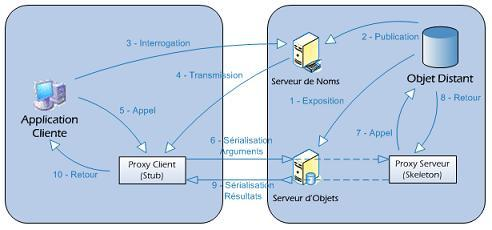
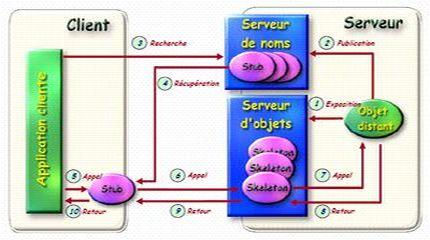

1 Définition des architectures N-tiers
2 Les deux utilités possibles des architectures N-tiers
2.1 Puissance de calcul
2.1.1 Solution du clustering
2.1.2 Difficulté de l’algorithmique distribuée
2.2 Connexion avec l’existant
3 protocoles et techniques N-tiers
3.1 Protocole CORBA (première spécification 1991)
3.2 Protocoles RMI IIOP
3.3 Les WebServices
CORBA


Liste des ORB disponibles : http://www.puder.org/corba/matrix/
Liste des ORB free : http://adams.patriot.net/~tvalesky/freecorba.html
Annexe : liste des ports usuels des protocoles N-tiers
iiop 535 Tcp iiop
iiop 535 Udp iiop
corba-iiop 683 Tcp CORBA IIOP
corba-iiop 683 Udp CORBA IIOP
corba-iiop-ssl 684 Tcp CORBA IIOP SSL
corba-iiop-ssl 684 Udp CORBA IIOP SSL
omginitialrefs 900 Tcp OMG Initial Refs
omginitialrefs 900 Udp OMG Initial Refs
cma 1050 Tcp CORBA Management Agent
cma 1050 Udp CORBA Management Agent
rmiactivation 1098 Tcp RMI Activation
rmiactivation 1098 Udp RMI Activation
rmiregistry 1099 Tcp RMI Registry
rmiregistry 1099 Udp RMI Registry
orbplus-iiop 1597 Tcp orbplus-iiop
orbplus-iiop 1597 Udp orbplus-iiop
corbaloc 2809 Tcp CORBA LOC
corbaloc 2809 Udp CORBA LOC
jboss-iiop 3528 Tcp JBoss IIOP
jboss-iiop 3528 Udp JBoss IIOP
jboss-iiop-ssl 3529 Tcp JBoss IIOP/SSL
jboss-iiop-ssl 3529 Udp JBoss IIOP/SSL
glassfish-iiop 3700 Tcp GlassFish IIOP
glassfish-iiop 3700 Udp GlassFish IIOP
glassfish-iiop-ssl 3820 Tcp GlassFish IIOP/SSL
glassfish-iiop-ssl 3820 Udp GlassFish IIOP/SSL
glassfish-iiop-ssl 3920 Tcp GlassFish IIOP/SSL auth mutuelle
glassfish-iiop-ssl 3920 Udp GlassFish IIOP/SSL auth mutuelle